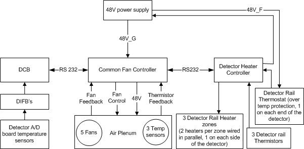

Operating Documentation
Direction 5193574-800, Rev# 22
LightSpeed 7.X Service Methods
Module Version 3.0, Version Date 5/17/10
Operating Documentation |
| Last Revised: | 28 September 2009 |
The VCT Digital DAS is a new architecture compared to the MDAS and GDAS. It has distributed power architecture. There are many DASTypes that are defined in the VCT system type. The VDAS32 is a combination VDAS with a 32 slice Sherlock detector. The VDAS64 is a VDAS with a 64 slice Sherlock Detector. The HDAS64 is an HDAS with a 64 slice HALO detector. The HDAS_SATURN_64 is an HDAS with a 64 slice Saturn detector. Sherlock was the first VCT system detector, HALO was an improved version in that it requires less power and decreased the thermal loads on the system. The Saturn detector is a modified HALO detector, which uses ganged (32 slice like) modules on both ends of the detector where resolution is not used nor expected. All detectors are serviced in the same manner.
The VCT DAS and Detector is comprised of the following components:
Field Replaceable Detector Module (FRDM)Section 2)
The FRDM (or Digital Module) is a single detector diode module attached via flex connection to two A/D boards for 64 slice or a single A/D board for 32 slice systems or a combination of both for the Saturn detector. The detector module and A/D board(s) along with the digital cable to the backplane are a single FRU. There are 57 FRDM's that make up the analog portion of the DAS and Detector.
Digital Interface Boards (DIFB) (Section 3)
The DIFB's are the Digital interface boards that take the FRDM digital output signals and send them to the DCB. There are 29 DIFB's for the 64 slice VDAS system and 15 for the 32 slice VDAS system. The HDAS 64 and HDAS_SATURN_64 systems only have 15 DIFB boards.
DAS Control Board (DCB) (Section 4)
The DCB is the main control board for the DAS. It packages all the interface card data into a single high-speed serial data stream.
Backplane (Section 5)
The DAS Backplane is comprised of 2 boards that contain passive components only. The backplanes route a calibration reference level signal from the DCB and power supply voltages to the FRDM's as well as transmitting digital signals.
Air Plenum (Section 6)
The Air plenum is comprised of 5 fans, filter assembly, Heater Control board, Fan control board, and thermal sensors.
48V Power supply (Section 7)
The 48V power supply is a single power supply on the rotating assembly that powers most all of the components. This supply is not specific to the DAS. All voltages used by the DAS and Detector are generated via on board regulators on the DCB and DIFB's. The FRDM power is supplied by regulators on the DIFB's.
The Common Fan Control (CFC) and Detector Heater Control (DHC) board theory can be found in the Gantry Thermal Theory document. These boards are a part of the detector subsystem in VCT systems.
The FRDM (or Digital Module) is made up of a Detector module, and A/D board set along with a digital cable attached to the A/D boards, which is then connected to the DAS backplane. For the VCT system, the detector is no longer a single assembly. The detector is now 57 individually replaceable detector modules and associated A/D functional components. For more details about this part see VCT Detector Theory.
The DAS interface board that is abbreviated as DIFB or IFB acts as an interface bridge between the FRDM and the DAS control board (DCB). The DIFB processes multiple low speed data streams from the A/D boards and then sends high-speed data to the DCB in a serial stream.
The DIFB performs the following functions:
Voltage Regulation
Power Supply Sensing
Voltage Monitoring
CAN Interface to DCB
Data Formatting (FFP)
Serial Interface with the A/D module.
ASIC Control
Point-To-Point Data Transmission to DCB
Offset Compensation
Linearization
Temperature Sensing
Diagnostics
There are slight differences for the DIFB interface to the VDAS64, VDAS32 and HDA64 DAS/Detector configurations. Reference the backplane maps under System Diagrams for the VDAS and HDAS configurations for more details and a view of the complete structure of the DAS/Detector.
The 32-slice VDAS system architecture has 15 DIFB's each of which communicates with 4 FRDM's (Digital Modules). Each FRDM has 1 A/D board that is connected to the 32 slice Sherlock detector diode, referenced as the “A” side A/D board. The only exception is for FRDM #57 which has it's own DIFB just due to the math for an odd number of FRDM's.
The DIFB's are number by odd numbers only (1,3,5....29) since they are in the odd numbered slots of the DIFB chassis and need to line up to the backplane connector for each set of 4 FRDM's.
To maintain gantry balance, blank cards are inserted for the even numbered DIFB slots for a 32 slice system.
The 64-slice VDAS system architecture has 29 DIFB's. The DIFB's work in pairs to communicate with 4 FRDM's (Digital Modules). Each Digital Module has 2 A/D boards that are connected to the 64 slice Sherlock detector diode. The 2 A/D boards are referenced as an “A” and “B” side A/D board. For example: DIFB 1 talks to the “A” side A/D boards for FRDM's 1-4. DIFB 2 talks to the “B” side A/D boards for FRDM's 1-4. The only exception is DIFB 29 which talks to the “A” and “B” side A/D boards for FRDM #57 due to the math for an odd number of FRDM's.
The 64-slice HDAS system architecture has 15 DIFB's. This is half of the boards needed for the VDAS64 due to the reduced power required by the HALO detector A/D boards. For the HALO FRDM's, each DIFB talks to 4 complete FRDM's (Digital Modules). The only exception if for FRDM #57 which has it's own DIFB just due to the math for an odd number of FRDM's.
The DIFB's are number by odd numbers only (1,3,5....29) since they are in the odd numbered slots of the DIFB chassis and need to line up to the backplane connector for each set of 4 FRDM's. Note that for the HDAS64 system, only the odd numbered locations in the DIFB chassis have a slot for a board. This was changed specifically for the HDAS64 system so there was no confusion regarding where to put the DIFB boards.
The 64-slice HDAS_SATURN_64 system architecture is basically the same as the HDAS (HALO) system. The only difference is that FRDM's 1-8 and 49-57 are “ganged” modules such that the detector cells are 2 channels wide (1.25 x 0.625).
| NOTE: | The ganged modules are hardwired. They do NOT use the FET controls that the 32 slice detector uses for “ganging” of detector cells. |
One DIFB communicates with four modules. The DIFB has separate transmitting and receiving lines for each A/D board. The data lines are Low Voltage Differential Signals (LVDS).
It is a source synchronous design. Both transmitting and receiving data are transmitted with their clocks. The clocks are LVDS signals.
There is a separate reset signal from the DIFB to the A/D boards. The reset signal will reset the GDAS ASICs and FPGA. The reset signal is derived from the DCB reset signal.
The DIFB supplies power to the A/D boards.
A signal is also used to specify if the A/D boards are present or not. The signal is an active low signal.
Only odd numbered DIFB's can configure the A/D board FPGA. This was necessary to be completely compatible with the VDAS32 architecture and HDAS64 architecture, both of which only have odd numbered DIFB boards.
Channel data read is a kind of the sequential read operation. The DIFB reads 4 serial data buses at the same time with a burst mode.
The interface between the DIFB and DCB is a point-to-point connection. A serial data output signal is a pair of low voltage differential signals. The trigger signal from the DCB initiates a view collection. During the initialization, the DIFB sends a series of the training patterns to the DCB. Once the DIFB is ready to send channel data to the DCB, the DIFB sends a 16-bit word header, the 1040 (32-slice) or 2080 (64-slice) data channels, and 16 auxiliary data for temperature signals and diagnostic data. Between the each view, the training pattern will be transmitted.
The 32-slice and 64-slice have same channel output sequences. For the 32-slice CT, only one Slipring transmission channel is used. For 64-slice CT, two Slipring transmission channels are used. The following table shows the channel out sequence for both 32-slice and 64-slice CT from the DIFB to the DCB.
Table 1: Channel Output Sequence
| Channel Output Sequence | Channel Number | Slice Number Odd/Even DIFB |
| 0 | View Header | |
| 1 | 1 | 1/33 |
| 2 | 2 | 1/33 |
| sequence continues | ||
| 65 | 65 | 1/33 |
| 66 | 1 | 2/34 |
| sequence continues | ||
| 2079 | 64 | 32/64 |
| 2080 | 65 | 32/64 |
| 2081 | Auxiliary Data 1 | Temp 1 (A/D M_1) |
| 2082 | Auxiliary Data 2 | Temp 2 (A/D M_1) |
| 2083 | Auxiliary Data 3 | Temp 1 (A/D M_2) |
| 2084 | Auxiliary Data 4 | Temp 2 (A/D M_2) |
| 2085 | Auxiliary Data 5 | Temp 1 (A/D M_3) |
| 2086 | Auxiliary Data 6 | Temp 2 (A/D M_3) |
| 2087 | Auxiliary Data 7 | Temp 1 (A/D M_4) |
| 2088 | Auxiliary Data 8 | Temp 2 (A/D M_4) |
| 2089 | Auxiliary Data 9 | Temp (DIFB) |
| 2090-2096 | Auxiliary Data 10-16 | Reserved |
The CAN bus is used to communicate with the DCB and other IFBs through a CAN transceiver. There are only two serial lines to be connected on CAN bus: CAN_Hi and CAN_Lo (Differential , bi-directional signal pair). Communication is accomplished through a command/acknowledge protocol.
Each DIFB connected to the bus is software addressable by an unique address and each DIFB shall have its own unique address, known as its slave address. This address is determined by the DIFB backplane connection and the unique address is determined by the DIFB's location in the backplane.
The DIFB and FRDMs have separate I2C data lines. A multiplex in the FPGA will select which I2C bus will be used.
Besides one I2C temperature sensor for itself, the DIFB also writes to and reads from two temperature sensors and one serial EEPROM for each A/D board it is connected to. All sensors and EEPROMs are tied through a 2-wire serial interface (I2C bus).
The I2C interface for the HDAS64 configuration changed to a serialized communication path not hard lines between boards like the VDAS configurations.
The following test points and LED's are available on the DIFB. There are no adjustable power supplies in the DAS subsystem.
Table 2: LED's
| LED | Function | Condition: Blinking Green | Condition: OFF |
| DS1 | Error | Error code | No errors |
| DS2 | Trigger | Trigger occurring | No trigger activity |
| DS3 | CAN Activity | CAN activity present | No CAN traffic |
| DS4 | Not used | Not used | Not used |
The DCB is the main control board for the VCT, 32/64-Slice Data Acquisition System (DAS). It packages all the interface card data into a single high-speed serial data stream, compatible with the receive function on the 32/64-Slice DAS Interface Processor (DIP).
From Interface Boards (DIFB):
Serial Data Streams, for an 32- or a 64-slice system
DIFB CAN Bus communication for status, faults, chassis temperature readings, and serial number information
Interface Board Fault Line
From On-Rotating Processor (ORP):
Input View Triggers
RCIB CAN Bus communication for scan prescription information and FLASH download
RCIB CAN Fault Signal
From Detector Heater Control board (DHC):
- RS-232 Bus communication for status, faults, detector temperature readings, and detector identification information
From Generator:
- KV & MA analog signals
From Backplane:
- Power supply voltages
To Interface Boards:
Shift Clock
Trigger Signal
Converter CAN Bus communication for control information
Reset signal
External reference current
To On-Rotating Processor (ORP):
RCIB CAN Bus communication for DAS status, error, or scan complete information
RCIB CAN Fault Signal
To Detector Heater Control board (DHC):
- RS-232 Bus communication for control information
To Detector:
- FET Control signals (VDAS32 only)
To Slip-ring:
- High-speed serial data stream containing the view data with embedded FEC CRC.
The DCB will perform the following functions:
Interfaces with the On-Rotating Processor (ORP) for Rx reception and scan completion via CAN bus.
Sets up gain and offset trim and controls the interface boards, via the DIFB CAN interface.
Receives triggers and starts acquisitions with the interface cards.
Performs serial-to-parallel conversion on data streams from the interface boards, does parity checking on the data, and formats the data for view transmission.
Adds Forward Error Correction (FEC) to the channel data and sends it across the slip-ring to the Scan Reconstruction Unit (SRU) via the high-speed serial data interface.
Detects jitter and time-outs in the view trigger signal.
Controls the operation of the Detector Heater Control board and monitors the subsystem for faults.
Monitors the power supply voltages to make sure they are within the software programmable limits.
Acquires the kV and mA values for each scan.
Controls the FET switch array in the detector to change the number and thickness of scan slices (32-slice only).
Monitors the DAS subsystem for various faults.
Stores & sums the z-axis reference channels, and performs calculations that control the collimator cam positioning. This is used to track the x-ray beam and keep it centered on the detector.
Two broadcast signals from the DCB are used to control the sequencing of data onto the data streams.
The trigger signal will be used to initiate the sampling and transmission of all the channels on the DIFB.
In response to an external or internal view trigger, DCB will generate a trigger pulse to all of the interface boards through the chassis backplane. Both external and internal view triggers have the same effect on the DCB.
The only mechanism to reset the converter boards will be to assert the reset signal. This active high, single-ended signal is set by the DCB and sent to all interface boards through the chassis backplane.
An active low signal is generated by an interface board to notify the DCB in the event of a fault condition. Any one or more interface boards can assert this signal at anytime. When the signal is asserted, the DCB will interrogate all interface boards via the Interface Board CAN bus to determine the cause and report an error condition when appropriate. The actual interrogation is done by firmware.
The DCB produces an external reference current, to the interface boards for diagnostic purposes.
The CAN bus used between the DCB and the converter boards is a bi-directional serial communications bus which requires only two serial lines. Communication is accomplished through a command/acknowledge protocol, rather than a register-access protocol.
The DCB will accept DAS channel data from the converter boards, per the following definition. The Interface Board processes digital channel data from the ASIC’s resident on the A/D boards. This data is combined with temperature measurements into a single point-to-point serial data stream to the DCB.
When the DIFB receives a trigger signal from the DCB, the DIFB starts to send its channel data. During the each view period, there will be some idle time, during which the DIFB will send alternating 1’s and 0’s (1 0 1 0 1 0 …) to maintain the lock.
The interface from the DCB to the console is designed to run at 2.488 Gbaud per link, where each link represents a physical channel on the slipring. The design requires one 2.488 Gbaud channel for a 32-slice system and two 2.488 Gbaud channels for a 64-slice system.
The DCB Host Interface will be used to control DAS operation and to communicate DAS status. The following sections describe the control interface. The DCB Host Interface makes use of Controller Area Network (CAN) technology. The DCB’s use of this technology including the physical interface conforms to all CAN specifications. All CAN signals are optically isolated between the DCB and the network.
The DCB receives the external view trigger input from the ORP via a twisted pair wire. This input signal is optically isolated from the DAS and causes the DAS to begin view data collection.
Measured scan kV and mA are read by the X-ray Generation Subsystem and fed back to the DAS so they can be inserted into the view data stream. The Generator Interface is implemented on a connector located on the backplane and signals are routed to the DCB via the backplane. These signals are differentially driven by X-ray Generation and received by the DCB.
The DCB generates a maximum of 18 signals to configure the detector FET MUX circuitry. These lines are used only for the 32-slice system. Each of the following 3 groups of detector modules uses a maximum of 6 of these signals for their MUX configurations: Z-axis Upper (ZUFET), Data Channel Detector (DFET), and Z-axis Lower (ZLFET).
The DCB communicates with the Detector Heater Control board (DHC) using an RS-232 serial communication interface. This interface provides the path for the DCB to setup and control DHC operation, to monitor the DHC subsystem for faults, and to obtain detector temperature readings for inclusion in the view data stream.
On power-up the DCB detects the presence of the DHC in the system. If the presence of the DHC is detected, the DCB will begin to communicate with the DHC via the RS-232 interface through the CFC.
Below are the test points and LED's available on the DCB.
Table 3: LED's
| DS # | Function | Green | Yellow |
| 1 | PWR | Board has 3.3V digital power | |
| 2 | RESET | Lit while in reset | |
| 3 | FPGA | FPGA loaded(No light = error) | Loading |
| 4 | B/A CODE | Application code loaded(No light = error) | Boot code loaded |
| 5 | HRTBEAT | Heartbeat | |
| 8 | GCAN_FLT | RCIB can bus fault | |
| 6 | GCAN_RX | Receiving data from RCIB can bus. | |
| 7 | CCAN_RX | Receiving data from converter card can bus | |
| 9 | Optlink | Not implemented. | |
| 14 | APP<0> | Application code controlled | |
| 15 | APP<1> | Application code controlled | |
| 16 | APP<2> | Application code controlled | |
| 17 | APP<3> | Application code controlled | |
| 10 | FLT_SENS_EN | Fault line is EnabledOFF: Fault line is Disabled | |
| 11 | FLT_YES | In Fault Condition OFF: Not in Fault Condition) | |
| 12 | HCOM_ACT | Connected to Host(Off = Not connected) | |
| 13 | ERR_CODE | Error code indicator |
There are two backplanes for the Digital DAS. One backplane is a “Low Channel” backplane that has one DCB slot, 14 DIFB slots, an inter-backplane connector, two power connectors and sub-miniature D style connectors for Common Fan Controller (CFC), Generator Inputs and RCIB connections. This backplane interfaces to the lower numbered detector modules. The other backplane is a “High Channel” backplane and it consists of 15 DIFB slots, an inter-backplane connector and two power connectors. The main power comes to each backplane separately and does not distribute between backplanes. The backplanes do not have any active components on them.
Reference the backplane maps under System Diagrams for more details.
The backplanes for the VCT Digital DAS:
Convey the power to the Field Replaceable Detector Modules (FRDM), the DIFBs and the DCB.
Provide mechanical attachment and support for the DIFBs and DCB
Act as an interface between the FRDM's A/D boards and the DIFBs to transfer the Digital data and control signals.
Provide for data and control transfer between the DCB and the DIFB cards.
Provide connectors for interfacing the DCB CAN bus communications to/from the Rotating Controller Interface Bus (CT-RCIB), an optical data link to the slip ring interface boards and for interfacing the DCB with the Detector Heater Control Board, and the generator kV and mA signals.
Provide diagnostic LEDs for displaying the state of the detector FET control signals. (For use on 32-slice only)
Provide FET Command and bias lines (For use on 32-slice only). These are pass through signals from the DCB to the FRDM's Detector module flex connections.
Configurations: The DAS is designed to work as a 32 and 64 slice DAS without any hardware configuration other than the number of DIFB cards inserted into the DAS backplanes. The backplanes do not change between configurations.
The DCB clock and trigger signals as well as the 48V power is routed on the backplane to groups of DIFB's.
The DAS air plenum is comprised of the plenum housing, filter assembly, 5 fans with rotational feedback, three temperature sensors, a fan control board and heater control board.
There are 5 variable speed fans mounted to a fan plate on the front of the Air plenum. Each fan is individually controlled from the Common Fan Control Board.
There are three temperature sensors within the air plenum that send data back to the CFC for use in fan speed control.
There is a single filter with honeycomb EMC shield integrated onto the back side of the filter. With the fan plate off the front of the air plenum, the filter side can be seen. The EMC shield is susceptible to damage so care must be taken when handling the filter assembly.
By using variable-speed fans, this design both mitigates the effects of air temperature on the detector with the plenum (rotating) and minimizes the gantry air temperature variation (stationary).
The fan control algorithm is run in firmware on the DCB using feedback data from the CFC and the A/D board temperatures read through the DIFBs to the DCB. The CFC passes the plenum fan speed feedback and digital temperature measurements to the DCB firmware and will receive fan speed control signals via RS232. The CFC communicates to the Heater Controller via RS232 to receive heater-rail temperatures.
Illustration 1: DHC and CFC Block diagram

Inputs:
5 Digital tach signals (2 pulses per revolution) from fan
3 Thermistor temperature sensor inputs.
5 Velocity sensors
Outputs:
5 Fan 0-10V analog voltage output for speed control. Fans begin to spin at ~1.25V Control Voltage
48VDC for each of the 5 fans.
12VDC control for stationary heater solid state relay (SSR) - Not to exceed 30mA at 12Vdc
Inputs/Outputs:
Digital heater feedback from Detector Heater via Heater Controller board through an RS232 connection (isolated on the Heater Controller board).
Firmware communications from the DCB/TGPU firmware via an electrically isolated RS232 connection.
Default Mode:
All fans will run at 1/2 speed, the gantry heater will be in the “Off” state, and the board will be ready for communication. The amber Default Mode LED will be lit. The system will stay in this state until a control communication from the host is received and the hardware watchdog circuit is enabled.
Hardware Watchdog:
A “watchdog” function exists in hardware that will set and hold the board in “Default Mode” within 1 second on power up. The CPU, once initialized will write to the watchdog register continuously, which will allow variable fan speed and heater control from host. If CPU does not continuously refresh watchdog within 1 second, the board will enter Default Mode with the heater disabled, and the fans set at ½ speed via hardware without any firmware interaction. The host is able to determine that the hardware watchdog failed.
Runtime diagnostic self test:
Detect and report open thermistors
Detect and report shorted thermistors
Detect and report Stationary Heater over-temp (open circuit when it should be closed)
Memory Checksum or CRC check
The diagnostic self test will run on power on and also during regular operation at regular intervals timed at 1.15 seconds between tests. Test results will be communicated to host on request. This method allows the host to query diagnostic results multiple times at multiple gantry positions while rotating. This will simplify diagnosis of rotation-related intermittent problems.
Unconnected/Unused:
Unconnected fans, thermistors and airflow sensors will be reported along with the connected ones. The host firmware will determine if the component is connected and reporting an error or not connected at all based on system configuration.
48V Power supply monitor circuit:
The CFC will monitor the 48V input at an accuracy of ±500mV and store the information in memory to be read by the host for diagnostic reporting.
The detector heater controller is designed to maintain rails at a uniform temperature, which is critical for controlling the photodiode and preventing any changes to the rail temperature profile. Changes in the rail temperature or the temperature profile can both lead to IQ errors due to poor diode temperature control. By using variable speed fans, this design will mitigate the effects of air temperature variation (rotating). The DHC is used on the rotating side with an RS232 interface to the common fan control (CFC) and the external firmware control.
The heater controller provides PID control for up to 5 independent heater zones but the VCT detector is only using 3 zones. PID control is required to accommodate the wide range of heat fluxes (duty cycle) that will be encountered in operation. In order to prevent EMI issue, the heater controller provides a constant filtered DC voltage to the rail heater zones. All PWM chopping of the input voltage is done within the controller. Also the communication of the temperature measurements of the rails, will be done to the Common Fan Controller (CFC) via the RS232 protocol.
Inputs:
3 Thermistor temperature sensors from rails on detector assembly.
48V DC power supply.
Outputs:
- Voltage to the 3heater zones between 0 to 48V.
Input/Outputs:
Digital heater feedback from Detector Heater via Heater Controller board through an electrically isolated RS232 connection.
3 digitized thermistor sensors.
Thermistor flag informing about the functionality.
Heater health flag.
Boot up sequence and default mode: Upon POWER ON, all heaters will start heating the detector and measurement will be made constantly by the DHC at every 5 seconds. The heater will stay in ON mode until a communication with DHC specifies otherwise.
Diagnostic self test
Detect and report open thermistors
Detect and report shorted thermistors
Detect and report open heaters
Detect and report shorted heaters
Memory Checksum or CRC check
The diagnostic self test will run on POWER ON and also during regular operation at regular intervals timed at 1.15 seconds between tests. Test results will be communicated to the DHC on request. This method will allow the DHC to query diagnostic results multiple times at multiple gantry positions while rotating.
The 48V power to the DHC is run through a thermostat on each end of the detector rails. The thermostats are used for over temperature protection for the detector and will cut off power to the DHC if the temperature of the rails reaches 45 +/- 2 degrees C and will not close until the rails have cooled down to 39 +/- 1 degree C.
The 48V power supply is a single power supply on the rotating assembly that powers the DAS, Detector subsystem, Collimator, ORP, Heater control bd, Fan control bd and Slipring Transmitter. All voltages used by the DAS and Detector are generated via on board regulators on the DCB and DIFB's. The A/D board power is supplied by regulators on the DIFB's. There are no voltage adjustments for the DAS components.
The Power supply has an internal fan for cooling.
The VCT 48Vdc Fuse Board provides a central point for fuse protection and distribution of 48Vdc power to the rotating harnesses and loads on the VCT gantry. The board is powered by the main rotating 48Vdc power supply. The loads served by this board are: DAS, Collimator, DHC, CFC, ORP & Slip-Ring Transmitter.
Table 4: LEDs and Test Points
| Label | Name | Description |
| TP1 | LGND | Logic Ground. |
| TP2 | CM | 0-5V analog signal proportional to % full current output of the supply. |
| TP3 | +48Vdc | 48Vdc reference. |
| DS 1 | PWR ON | Green LED to indicate power supply OK. |
| DS 2 | 48V_A | Power to Low channel backplane DIFBs 1 - 8 |
| DS 3 | 48V_B | Power to Low channel backplane DIFBs 9 -14 and DCB |
| DS 4 | 48V_C | Power to Low channel backplane DIFBs 15 - 22 |
| DS 5 | 48V_D | Power to Low channel backplane DIFBs 23 - 29 |
| DS 6 | 48V_E | Power to the Collimator |
| DS 7 | 48V_F | Power to the DHC |
| DS 8 | 48V_G | Power to the CFC |
| DS 9 | 48V_H | Power to the ORP |